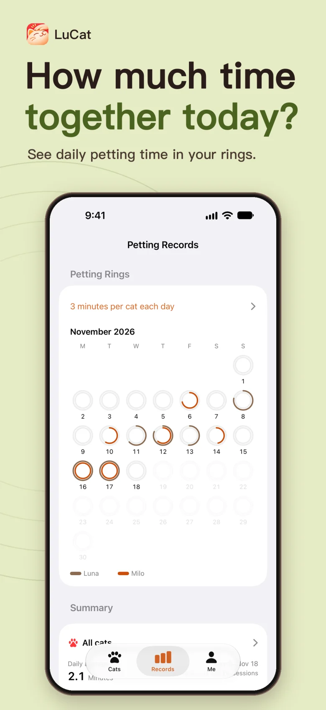
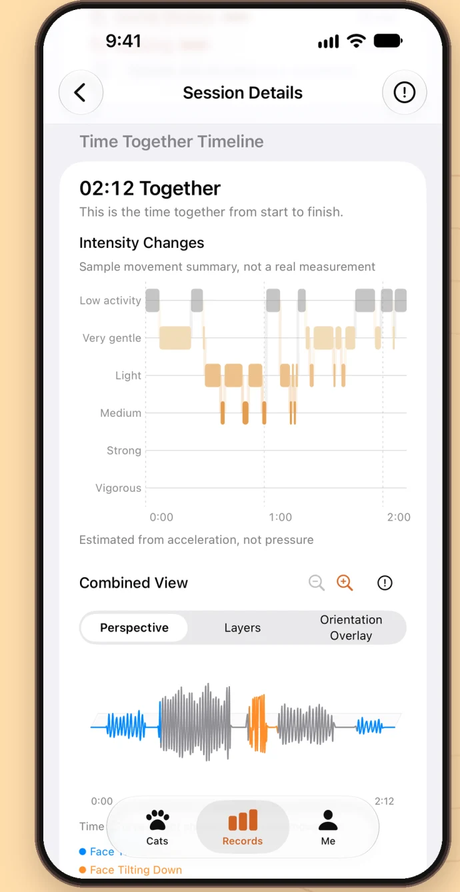
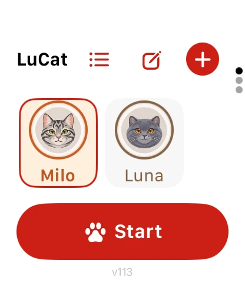
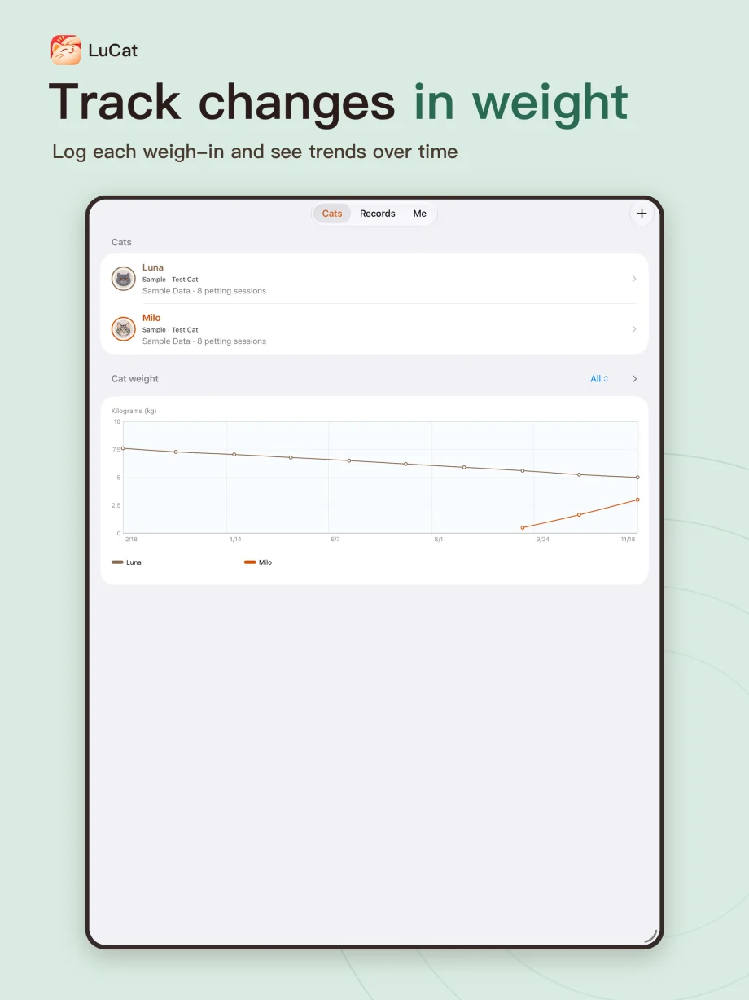

See your daily progress
Follow a daily petting goal, browse your calendar, and set a reminder when you want one.
For iPhone, iPad, and Apple Watch
Tap to start on Apple Watch. Revisit your sessions on iPhone and see how the minutes add up for each cat.
See how it works

See your own routines take shape and keep each cat’s records easy to find.

Follow a daily petting goal, browse your calendar, and set a reminder when you want one.

Give each cat a profile and switch between them to see their individual petting history.

Log weigh-ins in pounds or kilograms and view your cat’s weight trend on a chart.
Get help with Apple Watch sync, your records, or the app’s settings.